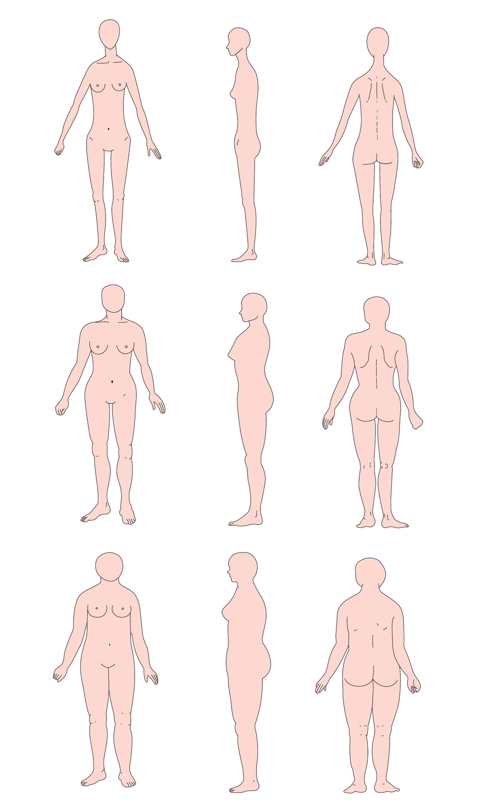

体質学基礎Ⅲ ／ Body Signs
肌や髪、体つきに表れる体質のサインを読み解き、トラブルが出やすい部位まで見通す。先回りのケア提案につながる、観察の回です。
体質は、肌や髪、そして体のあちこちに「サイン」として表れます。体質学基礎Ⅲでは、3つのタイプそれぞれの肌質・髪質の傾向や、不調やトラブルが出やすい部位（好発部位）を学び、お客様の体からのサインを読み解く力を深めます。見た目だけでなく、"これから起こりやすいこと"まで見通せるようになります。

「最近、ここが気になりませんか？」——先に言い当てられると、信頼は一段深くなります。
お客様自身もまだはっきり気づいていない肌の変化や不調を、体のサインから先回りで指摘できると、「どうしてわかるの？」という驚きが生まれます。これは、表面的な観察では届かない領域です。
「この方は今後ここが気になりやすいから、今のうちにこのケアを」と根拠を持って提案できれば、お客様は"ちゃんと見てくれている"と感じます。その安心感が、継続的な来店と、必要なケア・商品の自然な売上につながっていきます。
お客様の肌や体をより深く読み取りたい美容師・エステティシャンの方、表面的でない"根拠のあるケア提案"をしたい方におすすめの回です。
この回は、体質学基礎Ⅰの受講を前提としています。まずは基礎Ⅰからお申し込みください。
体のサインを読み、先回りで提案する力を。下のボタンから、LINEでお申し込みいただけます。
お申し込みはこちら →体質学基礎Ⅰの受講者対象です。日程はお申し込みページでお選びいただけます。